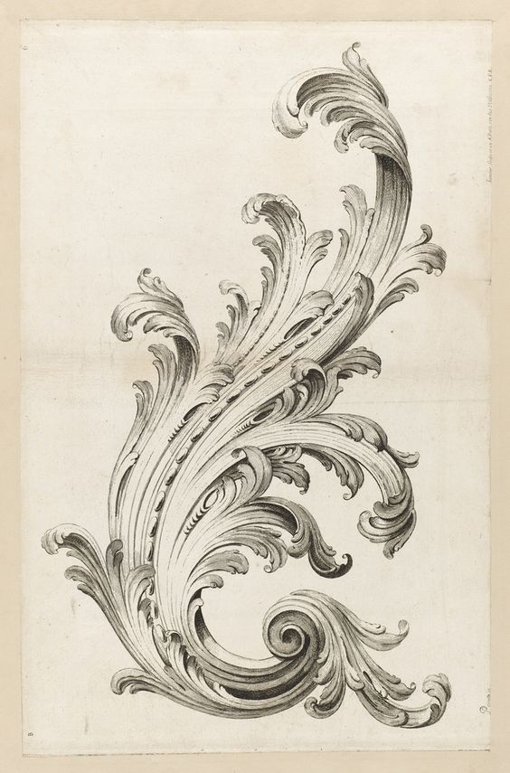
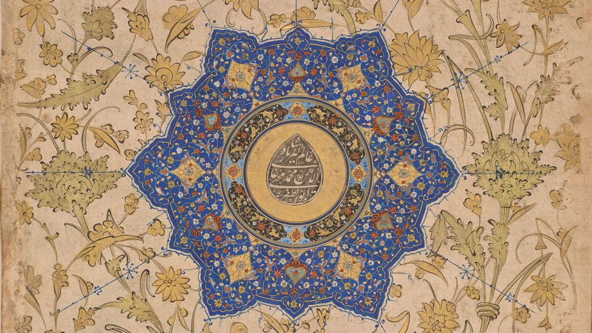

Thoughts About Aesthetics
The Roman architect Vitruvius suggested that all buildings should have three attributes: strength, utility and beauty. This is echoed in the principle of 'form following function' that grew out of late 19th century architectural thought. Similarly, it is my suggestion that all works of art must follow a premise; that art must follow a function. However, where this essay differs from the typical treatment of art is that the amount of value assigned to the presumed function of a work of art; it is not to be given great consideration. Further, using aesthetic sensibility as a means to political or personal elevation is an unappealing appropriation.
Artistic work made or apprehended in this manner virtually ceases to exist, the content of the work is entirely ignored in favor of whose face is featured, what platform it supports. Political cartoons are something of an embarassment, a sentiment intuitively shared by many. Greater emphasis on referential qualities leads to erosion of critical analysis of the aesthetic qualities of a work. And since these aesthetic qualities derive from our senses and experience, it advocates lesser attentiveness all around. In short, the 'meaning' derived from a work of art should follow from its aesthetic qualities that develop its representational elements, rather than starting from the level of representation.
The artistic work may not exist without pretense, that is to say reference to the natural world, because any artistic expression engages at least one of the senses, and our senses are only derived from our sensory experience. Consider the Molyneux problem; there is not an immediate association of language
They are derived from observances from reality and are often applied in a metaphorical nature. These abstract qualities that we find pleasing are evidence of our ability to conceptualize at a high level.
Aesthetic qualities: symmetricality, rhythm, distribution of elements in space, and gesture.
Size hierarchy is another visual idea that has an immediate correlation to our experience; objects closer to our eyes demand more attention -- what is more important, the elephant on the horizon The closer an object, the larger it appears in our field of vision.
Let's consider the case of gesture drawing. We undertake it with the understanding that there is some emergent quality to the pose of a model -- the 'gesture'. This quality was already understood by antiquity; evident in surviving sculptures posed in contrapposto. Gesture can be formalized to some degree; in repose an arrangement of limbs that each find the local minimum of energy required to sustain their position. But that doesn't explain the whole of it. We extrapolate further, take this maxim of finding energy-efficient repose and perhaps imbue it with some power of appeal. We find figures whose pelvis and shoulders are not aligned as more dynamic, varied, interesting. This is most likely due to the fact that relaxing poses are less likely to be symmetrical -- consider that maintaining good posture is more tiring. But what about dynamic poses? They can have varying amounts of gestural quality to them. To make an allowance for dynamic poses we must redefine the quality of gesture as 'an arrangement where the body is unified in some greater expression'. But we find that gesture is entirely representational. Further, any linear quality may be found to be an abstraction of gesture. When we project the quality of 'energy' onto lines, it is from this kinetic foundation that we analogize. It suggests something of kinematics, weight, balance, representation, in other words. Wait a minute. Gesture is more than just a strict minimizing of energy usage. In (1), the figure closest to the center cannot be said to be posed in anything resembling an practical pose, either for restraining Samson or to minimize energy expenditure. Yet it definitely has a gestural quality to it. Our concept of gesture generalizes to more than strict practicality. It speaks to body language. Further than this, artists take this principle one step further - we design shapes that have 'appeal' of the same quality as the gestural line.
The gesture dances on the line between structural rigor and capturing this abstract quality. The two aspects balance off each other. The force seeks to supercede its boundaries dilineated by form, rigor, but without that solidity it dissipates. Gesture develops one of the facets at the disposal of the painter. I believe similar forces may be expressed through the dimensions of color and value.
The typical narrative structure is another demonstration of this idea. Tension slowly builds up over time before culminating in a final confrontation, followed by a falling action and resolution. But this abstract outline is described without specifics of plot; we can speak about this idea and its characteristics without literal elements. Music can follow this structure as well. Moving away from the 'home' tone creates tension; returning is a resolution.
Schopenhauer said with respect to the relative lack of importance of words in music; 'With respect to this dominant role played by music, which stands to the text and action in the same relation as the universal to the particular or the rule to the example...'
Give that painting does not have the capacity for expressing dissonance and resolution temporally, it's probably a good idea to contrive the painting in such a way that it displays part of the development of a plot, where the setup and what follows are fairly implied.
Visual art does not lend itself to the same sort of abstraction that music resides in. Its depictions of aesthetic qualities are quite literal, somewhat idealized but still remain in their typical shape; that is, gesture and the qualities of tension in musculature and fabric are depicted as such whereas musically there is no such immediate source of its aesthetic qualities. Kandinsky certainly tried, however. I'm not convinced that his work really indicates the direction that visual art should go. Pictures also have a unique quality among art, that being virtually non-temporal. The consumption of an image can be done in a few seconds where preliminary opinions are already forming. Even for sculpture or ceramics, there is the aspect of the work having multiple faces that can't be observed simultaneously, one has to walk around or turn it over in their hands to observe its entirety. This non-temporal quality precludes the picture from a full narrative act.
As conclusion, pictures are best left to depictions of specifics, that is, representation. Painters have the most difficulty out of any artist in the recreation of the sensory phenomena that their art engages. Music is generally quite separate from the recreation of any particular naturally occurring ideas, and certainly reproductions of these sounds would not be terribly interesting, as they are rather trivial to do, or are not particularly suited to being produced from a small number of general instruments in the manner that a brush and a limited selection of paints can suffice for most expressions. Imagine someone up on a stage for the grand aural performance of the year, where they demonstrate their ability to reproduce bird calls or the sound of a stream with just their voice... Or the author that recites a transcript of a conversation overheard earlier that day. Painting is not just an exercise in reproduction, but historically that trait has certainly been valued much more so than in other arts.
It is the undertaking of all other artists to evoke the same ideas that are present in music; tranquility, contemplation, agitation, fear, melancholy, jubilation, etc. A work loses artistic value the further it strays from focusing on these qualities and placing more emphasis on representational qualities.
.jpg)

Another aesthetic trait is the treatment of contrast in a visual work. This is easily demonstrable in the qualities of the distribution of value and of detail, which are co-dependent. Just as we value a coherent point in polemic, it is similarly of importance in a visual work to have an evident hierarchy. Interestingly, this may intersect with the concept of gesture; variation for the sake of visual interest. In (2), a mixture of values are used. The large difference in value between the light browns of the background makes the dark blue of the radial design stand off strongly. Smaller shapes within the figure break up the shape and create further hierarchies. But they all follow the same principle of the strong blue against the light brown; one element emphasized over another.
There is also a hierarchy present in (1). The illuminated figures have been more of the limited range of value available as compared to the shadowy figures pulling on the ropes and in the doorway. This is called 'exposing for the lit side', and the unequal allotment of values produces the same emphasis of one element over another. The figures in shadow have relatively little detail; their clothing is entirely lost in the shadows.

In consideration of symmetry, it naturally follows that we have an inclination for it in human faces because it is a broad indicator of health and good genes. But what of radial symmetry? Is it incidental to the popularly believed purpose or a resulting generalisation? Well, why not both?
Beauty is in the eye of the beholder, since to deny the validity of an emotional reaction to art is contradictory -- the evaluation is the reaction itself.
Humans have two broad components, an intellectual sphere and an emotional, animalistic sphere. Art may appeal to both aspects -- the intellectual aspect that is able to recognize visual metaphor and finds its arrangement pleasing; and the emotional aspect that revels in themes that play at our instincts.
Values are a quality of contrast.
Is there universality? Mathematics being discovered or invented is a very convenient issue to point to, although it yields a disappointing answer. I believe that aesthetics are a heuristic for rational functions.
...But are rationality and aesthetics distinct concepts? Perhaps they converge. Aesthetics have a fuzzy consensus about them, which may form the foundation for further argument. It's possible that aesthetics are an intuitive process, reflective of our capabilities for percieving heuristically concepts of rationality; a penchant for unequal distributions across a space in the fundamentality of the fibonacci sequence, a base intuition for visual geometries. What if they are just manifestations of that fundamental dichotomy of slower, accurate thinking and faster and less accurate?[4] This may hold some merit. Symmetry has a very obvious analogue to mathematics. Bézier curves offer means of formalizing linear abstractions of motion and energy. Mathematical phenomena and proofs are described as 'beautiful' or 'elegant', and perhaps evoke a similar aesthetic reaction. The Islamics made extensive use of radially symmetric patterns and other geometric shapes as ornamentation.

Music
The same principles apply;
| 1. ↑ | Malevich, 1915: From Cubism and Futurism to Suprematism - I suffered through this inane work for the sake of writing this so it was very important to incorporate a reference lest my suffering be in vain. As a further note, his ideals do bear a certain similarity to Kantian transcendental thought, the debate of whose merits are far outside the scope here. I have a vague feeling he was not well aquainted with the arguments, however... |
| 2. ↑ | Wikipedia - Suprematism |
| 5. ↑ | Source |
{kind=link}